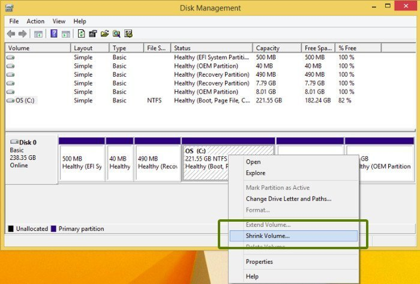

Installing Linux: Part 1
Pre-Install Preperations
This blog post will prepare you to install Ubuntu Linux. Before you actually get Linux onto your computer, you must do some work.
We will be installing Ubuntu Linux alongside Windows. This means that you will be able to choose which operating system that you want to use every time that you start your computer. This process of installing two operating systems on the same computer is known as ‘Dual-booting’. Many Linux users, like me, choose to dual-boot so that they can easily switch to using Windows, if ncessary. Dual-booting is especially useful for beginners who aren't very familiar with Linux yet. So, rest assured that once you install Linux you will always be able to fall back to Windows if you have any trouble.
So how does one install an operating system? You have likely never done this before, since your computer probably came with Windows or MacOS already installed on it. In the case of Ubuntu Linux, however, we need to follow a few steps:
Create some space for Ubuntu on your computer's hard drive.
Download a copy of a mini-Ubuntu operating system onto a USB drive.
Shut down the computer, plug in the USB, and “boot” (or start) your computer ‘from’ the USB. This means the computer will use the mini-Ubuntu operating system that's in the USB, instead of using Windows
Follow the on-screen instructions to install Ubuntu onto your computer's hard drive, alongside Windows.
Done! Now, every time you start your computer, you will have the option of starting Ubuntu or Windows.
This is a rough outline of what we will be doing. In this blog post, we will only do the first 2 steps.
Backup
Before we begin, I suggest you do a full backup of your computer to an external hard drive using the Windows built-in backup software. During the installation process, we will be making changes directly to your hard drive, and if it is done incorrectly, you can lose some of your files. If you correctly follow all the steps, however, nothing will go wrong. But still, it's wise to be extra careful. So, find a spare hard drive (or use cloud storage), and backup all your files onto it. This guide will not cover the steps to do that, here is one tutorial that you may find useful.
Also, I recommend installing Linux on a non-essential laptop or computer instead of your main one. Things can go wrong, especially for beginners, and it's best to separate your important work computer from the Linux computer that you are tinkering with until you gain more experience.
BIOS / UEFI
There are 2 types of firmware (the code that provides basic functionality like booting) that computers use: BIOS and UEFI. Your computer will use one of these two types. The process of installing Linux will be slightly different depending on which type of firmware your computer uses. For this reason, you must find out which type your computer uses. Note that newer computers (made after about 2010) tend to use UEFI. Follow this tutorial to determine if your computer uses BIOS or UEFI. Remember which one you have.
Disable Fast startup / Secure boot
To dual-boot, we will need to disable some Windows features that will interfere with the Linux installation. Namely, fast startup and secure boot.
To disable fast startup go to Control Panel > Hardware and Sound > Power Options > System Settings > Choose what the power buttons do and uncheck the Turn on fast startup box. Click here for a screenshot tutorial.
Secure boot is a feature exclusive to computers using UEFI. If your computer uses UEFI, follow this tutorial to disable secure boot.
Now, grab a USB (at least 4 GB in size), and let's begin!
1. Download Ubuntu
We will begin by starting the download of the mini-Ubuntu operating system that we will be copying onto our USB. Even though this is step 2 in the list above, I want you to start the download now because it may take a while (it's around 2.5 GB). Go to this link and click on the download button for Ubuntu 20.04.1 LTS. I know it says you need 25 GB of free hard drive space on that website, but don't worry, the file you are downloading right now is not that big (it's only 2.5 GB). The website is refering to the space needed when installing Ubuntu on your computer's hard drive (in step 4). You DON'T NEED A USB OF 25 GB! It only needs to be 2.5 GB.
2. Make space on your hard drive
In the meantime, while the file is downloading, let's make some space on our hard drive. To install Linux, you will need to have about 40 GB of free space at least. That's because the Ubuntu OS files take up 25 GB and you want to have at least 15 GB for your personal files.
Before we proceed, you should check whether your hard drive uses MBR or GPT partion tables. Similar to how computer firmware comes in two types, BIOS and UEFI, computer hard drives can be used with something called MBR or GPT (look it up if you are curious). And just like with BIOS and UEFI, the process of installing Linux will differ slightly between the two. To find out whether your hard drive uses MBR or GPT, follow this tutorial.
Now let's create some space for Ubuntu. All hard drives are split into ‘partitions’. You can think of these as sections of your hard drive. Each section can hold files as usual. Your hard drive is already split into some partitions. Only 1 operating system can be installed on each partition. We need to create a new partition to install Ubuntu on. To create a new partition, we need to first ‘shrink’ the size of one of the existing partitions. To do this, open up Disk Management by searching in the bottom left corner. It should look something like this:

(If you are using MacOS, the app is called Disk Utility and it works in a similar way.)
If your hard drive uses MBR, you can have a maximum of 4 “primary” partitions. A primary partition is just another name for the regular type of partition that you know of. If you use MBR and your hard drive already has 4 or more primary partitions, then you will have to delete some of them. If your hard drive uses GPT however, there is no limit to how many partitions you can have. If you need to delete a partition, DO NOT delete your windows partition or C drive as they hold essential system files and also your personal files. Besides those two partitions, it is likely that you have a manufacturer partiton (like HP Tools, which I had) and a Windows recovery partition. It's best to delete the manufacturer's partition. And if after that you still have 4 or more, delete the Windows recovery partition.
BUT WAIT!!!
Before you delete it, you should make a copy of it onto another drive in case you need it in the future. To make a copy of a partition (or “clone” a partition as it's called), follow this tutorial. After creating a backup of your partition, you can go ahead and delete it. Then, you should have three partitions remaining.
Now, we need to “shrink” one of the partitions. By decreasing the amount of storage allocated to a partition, we will be left with some unallocated, or “free” space. We will then create a new partition in this free space and install Linux onto it. To shrink a partition, right click on the partition you want to shrink (for Windows users, pick the C drive partition), and click on ‘Shrink Volume’. Here, “volume” is synonymous with “partition”. A window will pop up asking you how much space you want to shrink in MegaBytes. The value you enter here will be the amount of space that you will have to install Linux on, so make it at least 40 GB. Note that the value is in MB, so pull out your calculator for this. If you have a large hard drive, you can go crazy and make it 100 GB, which will be more than enough. If you encounter an error that prevents you from shrinking the partition, then follow this tutorial to “defragment” your hard drive, and then try again. If you still don't have enough space, then backup and delete some of your files, then try again. After you have shrank the partition, there will be a new block that says ‘Unallocated’. This is what we are interested in.
3. Burn the ISO to the USB
Now let's check on the Ubuntu file that we were downloading in the background. That file is commonly called an ‘iso’ (pronounced EYE-sow) file because its file extension is “.iso”. It will let us boot the computer from that file. To do this, we need to copy it onto a USB drive. But a regular copy and paste won't work. Instead, we must write the iso file to the USB as a partition. Just like the partitions we saw earlier, this iso file will be a partition itself, on the USB, rather than existing as a file inside a larger partition. This process of copying a file onto a USB drive as a partition is called ‘burning’ the file onto the USB drive. Note that there's no fire involved here, it's just funny terminology used for historical reasons. To burn the iso file onto the USB, we will need third-party software. But before we proceed, you should copy all files from your USB and save them elsewhere. This is because once we burn the iso file onto the USB drive, it will overwrite all the data on the USB. So, you MUST backup all the data that is on the USB. This step is NOT optional.
Go do that now.
Next, we will actually burn the iso file to the USB. The software we will use defers depending on which operating system you are currently using. If you are using Windows, install Rufus from this link, and if you are using MacOS install Etcher from this link. If you are using Rufus, follow this video tutorial to burn the iso file. Follow it up until the point where he starts talking about booting the computer and then come back here. You don't need to watch the entire video. If you are using Etcher, click follow this tutorial.
And … you're done for now! The hardest part of the installation process is behind you! If you have any questions, let me know.
Good job!
Now you can move onto the next part (“Installing Linux: Part 2”) to actually install Linux onto your computer.